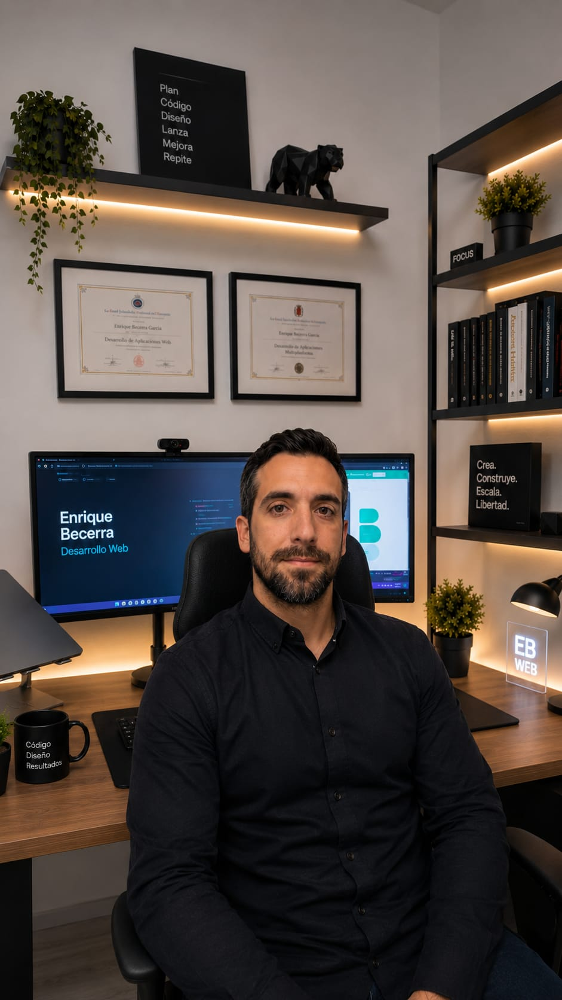

puerta abierta
¿Llevas tiempo
dándole vueltas
a una web?
Cuéntamela por DM. Te digo qué pienso, qué se puede simplificar, por dónde empezarías.
Sin reuniones de una hora, sin formulario de 20 campos, sin propuesta automática al día siguiente.
Si encaja, hablamos.
Si no, te habré ahorrado tiempo.
@ebecerra.es